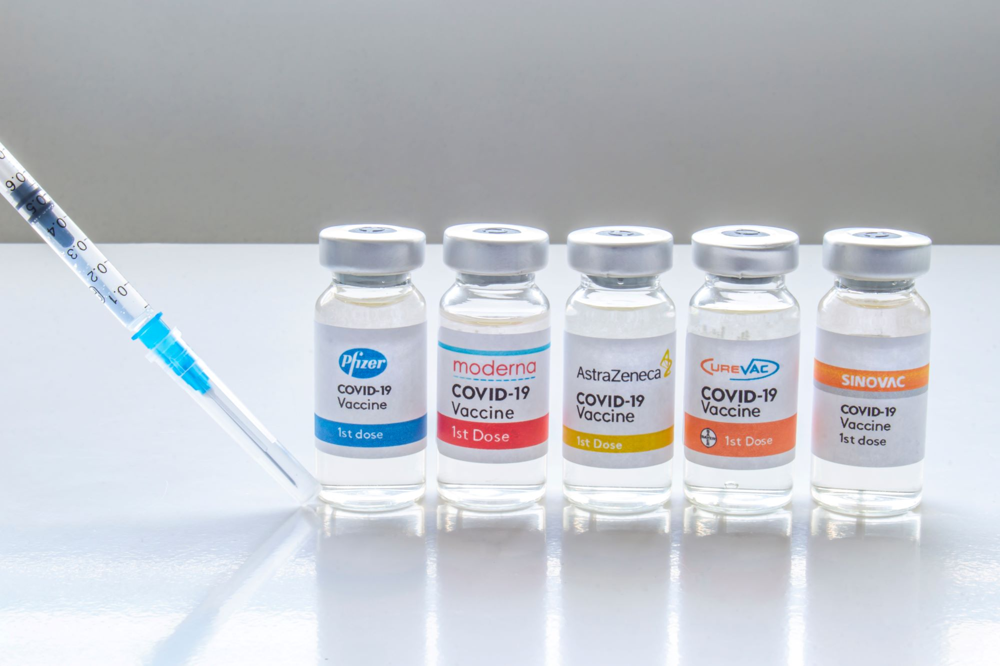

Vaccination is simple, safe and effective. It protects you against harmful dieases by building your body's natural defences to be more resistant against certain infections and makes your immune system stronger overall.
Vaccines cause your immune system to create antibodies by injecting weakened forms of the virus. This does not cause the disease or put you at risk.
There is a quick rundown of everything in this video:
Why you should take a vaccine?
Getting the vaccine can lower the risk of getting Covid-19 and if everyone takes it, we can contain it to a certain extent
If you do end up getting it, it will help prevent illnesses and death
COVID-19 vaccines becomes less effective at preventing infection or severe illness over time so thats why booster shots should be taken
anyone above the age of 5 can take it
Different Covid-19 Vaccines
Pfizer-BioNTech
Moderna
Johnson & Johnson's Janssen
Age Recommended
5+ years old
Age Recommended
18+ years old
Age Recommended
18+ years old
Primary Series
2 doses
Given 3 weeks (21 days) apart
Primary Series
2 doses
Given 4 weeks (28 days) apart
Primary Series
1 doses
Booster Dose
Everyone ages 18 years and older should get a booster dose of either Pfizer-BioNTech or Moderna (COVID-19 vaccines) 5 months after the last dose in their primary series.
Teens 12-17 years old should get a Pfizer-BioNTech COVID-19 Vaccine booster 5 months after the last dose in their primary series.
Booster Dose
Everyone ages 18 years and older should get a booster dose of either Pfizer-BioNTech or Moderna (COVID-19 vaccines) 5 months after the last dose in their primary series.
Booster Dose
Everyone ages 18 years and older should get a booster dose of either Pfizer-BioNTech or Moderna (mRNA COVID-19 vaccines) at least 2 months after the first dose of J&J/Janssen COVID-19 vaccine. You may get J&J/Janssen in some situations.
When Fully Vaccinated
2 weeks after 2nd dose
When Fully Vaccinated
2 weeks after 2nd dose
When Fully Vaccinated
2 weeks after 1st dose

Pfizer-BioNTech Vaccine Overview
General Information
Manufacturer: Pfizer, Inc., and BioNTech
Number of Shots: 2 shots, 21 days apart Moderately or severely immunocompromised people ages 5 years and older should get an additional primary shot at least 28 days after their second shot.
Booster Shot: Everyone ages 12 years and older is recommended to get a booster shot at least 5 months after completing their Pfizer-BioNTech primary series. Teens 12-17 years old can only get a Pfizer-BioNTech COVID-19 vaccine booster. For adults 18 years and older, a booster dose of either Pfizer-BioNTech or Moderna (mRNA COVID-19 vaccines) is preferred in most situations.
Type of Vaccine: mRNA
How Given: Shot in the muscle of the upper arm
Name: BNT162b2
Brand name: COMIRNATY
Who should get the Vaccine?
The Pfizer-BioNTech vaccine is recommended for people ages 5 years and older.
Do NOT get it if:
you have had a severe allergic reaction or have a diagnosed allergy to any ingredient in the Pfizer-BioNTech COVID-19 vaccine
If you had a severe allergic reaction after getting a dose of the Pfizer-BioNTech COVID-19 vaccine
If you are allergic to the Vaccine, look for other vaccines that are not mRNA like Johnson & Johnson’s Janssen
In the case that you get a severe allergic reaction which includes a rapid heartbeat, difficulty breathing, swelling of the throat, or a generalized rash or hives, you need to be treated with epinephrine and should seek medical attention immediately.
Moderna COVID-19 Vaccine Ingredients
All COVID-19 vaccine ingredients are safe. Nearly all the ingredients in COVID-19 vaccines are ingredients found in many foods—fats, sugars, and salts. The Moderna COVID-19 vaccine also contains a harmless piece of messenger RNA (mRNA). The COVID-19 mRNA teaches cells in the body how to create an effective immune response to the virus that causes COVID-19. This response helps protect you from getting sick with COVID-19 in the future. After the body produces an immune response, it discards all the vaccine ingredients, just as it would discard any substance that cells no longer need. This process is a part of normal body functioning.
All COVID-19 vaccines are manufactured with as few ingredients as possible and with very small amounts of each ingredient.
Original Ingredients of Pfizer Vaccine
Messenger ribonucleic acid (mRNA):
Nucleoside-modified mRNA encoding the viral spike (S) glycoprotein of SARS-CoV-2
Pfizer-BioNTech has updated the formulation of the Pfizer-BioNTech COVID-19 vaccine. The updated formulation has the same active ingredients as the previous formulation but uses different stabilizers (ingredients that help keep the vaccine molecules stable while the vaccine is manufactured, frozen, shipped, and stored). These changes allow for easier shipping and longer storage of vaccines at refrigerator temperatures. This will help improve access to vaccines for people who need them and will decrease waste.
The previous formulation for people ages 12 years and older is no longer being distributed, and once the doses of that formulation have been used, only the updated formulation will be available. Both formulations can be used interchangeably without any safety or effectiveness concerns. Check with your healthcare provider about which formulation they carry if you are concerned about any of the ingredients.
Updated Ingredients of Pfizer Vaccine
Messenger ribonucleic acid (mRNA):
Nucleoside-modified mRNA encoding the viral spike (S) glycoprotein of SARS-CoV-2
Number of Shots: 2 shots, 28 days apart Moderately or severely immunocompromised people should get an additional primary shot (third dose) at least 28 days after their second shot.
Booster Shot: People ages 18 years and older who received a Moderna primary series should get a booster shot at least 5 months after completing their primary series. CDC recommends getting a booster dose of either Pfizer-BioNTech or Moderna (mRNA COVID-19 vaccines) in most situations.
Type of Vaccine: mRNA
How Given: Shot in the muscle of the upper arm
Name: mRNA-1273
Who should get the Vaccine?
The Pfizer-BioNTech vaccine is recommended for people ages 18 years and older.
Do NOT get it if:
you have had a severe allergic reaction or have a diagnosed allergy to any ingredient in the Pfizer-BioNTech COVID-19 vaccine
you had a severe allergic reaction after getting a dose of the Pfizer-BioNTech COVID-19 vaccine
If you are allergic to the Vaccine, look for other vaccines that are not mRNA like Johnson & Johnson’s Janssen
In the case that you get a severe allergic reaction which includes a rapid heartbeat, difficulty breathing, swelling of the throat, or a generalized rash or hives, you need to be treated with epinephrine and should seek medical attention immediately.
Moderna COVID-19 Vaccine Ingredients
All COVID-19 vaccine ingredients are safe. Nearly all the ingredients in COVID-19 vaccines are ingredients found in many foods—fats, sugars, and salts. The Moderna COVID-19 vaccine also contains a harmless piece of messenger RNA (mRNA). The COVID-19 mRNA teaches cells in the body how to create an effective immune response to the virus that causes COVID-19. This response helps protect you from getting sick with COVID-19 in the future. After the body produces an immune response, it discards all the vaccine ingredients, just as it would discard any substance that cells no longer need. This process is a part of normal body functioning.
All COVID-19 vaccines are manufactured with as few ingredients as possible and with very small amounts of each ingredient. Each ingredient in the vaccine serves a specific purpose as seen in the table below.
Messenger ribonucleic acid (mRNA):
Nucleoside-modified mRNA encoding the viral spike (S) glycoprotein of SARS-CoV-2
Acetic acid (the main ingredient in white household vinegar)
Johnson & Johnson's Janssen Vaccine Overview
General Information
Name: JNJ-78436735
Manufacturer: Janssen Pharmaceuticals Companies of Johnson & Johnson
Type of Vaccine: Viral Vector
Number of Shots: 1 shot may be given in some situations.
Booster Shot: Everyone ages 18 years and older should get a booster dose of either Pfizer-BioNTech or Moderna (mRNA COVID-19 vaccines) at least 2 months after receiving the Johnson & Johnson’s Janssen (J&J/Janssen) vaccine in most situations.
How Given: Shot in the muscle of the upper arm
Does NOT Contain: Eggs, preservatives, latex or metals.
Who should get the Vaccine?
The Pfizer-BioNTech vaccine is recommended for people ages 18 years and older.
Do NOT get it if:
you have had a severe allergic reaction or have a diagnosed allergy to any ingredient in the Pfizer-BioNTech COVID-19 vaccine
you had a severe allergic reaction after getting a dose of the Pfizer-BioNTech COVID-19 vaccine
If you are allergic to the Vaccine, look for other vaccines that are not mRNA like Johnson & Johnson’s Janssen
In the case that you get a severe allergic reaction which includes a rapid heartbeat, difficulty breathing, swelling of the throat, or a generalized rash or hives, you need to be treated with epinephrine and should seek medical attention immediately.
Johnson & Johnson (J&J)/Janssen COVID-19 Vaccine Ingredients
The J&J/Janssen COVID-19 vaccine contains a piece of a modified virus that is not the virus that causes COVID-19. This modified virus is called the vector virus. The vector virus cannot reproduce itself, so it cannot cause COVID-19. This vector virus gives instructions to cells in the body to create an immune response. This response helps protect you from getting sick with COVID-19 in the future. After the body produces an immune response, it gets rid of all of the vaccine ingredients just as it would discard any information that cells no longer need. This process is a part of normal body functioning.
All COVID-19 vaccines are manufactured with as few ingredients as possible and with only the necessary amounts of each ingredient. Nearly all of the ingredients in COVID-19 vaccines are also the ingredients in many foods – fats, sugars, and salts. Each ingredient in the vaccine serves a specific purpose as seen in the table below.
A harmless version of a virus unrelated to the COVID-19 virus:
Recombinant, replication-incompetent Ad26 vector, encoding a stabilized variant of the SARS-CoV-2 Spike (S) protein
Sugars, salts, acid, and acid stabilizer:
Polysorbate-80
2-hydroxypropyl-β-cyclodextrin
Trisodium citrate dihydrate
Sodium chloride (basic table salt)
Citric acid monohydrate (closely related to lemon juice)
Ethanol (a type of alcohol)
Possible Side Effects After Getting a COVID-19 Vaccine
COVID-19 vaccination helps protect people from getting COVID-19. Some people have side effects from the vaccine, which are normal signs that their body is building protection. These side effects may affect their ability to do daily activities, but they should go away in a few days. Some people have no side effects, and allergic reactions are rare.
Adverse effects that could cause a long-term health problem are extremely unusual following any vaccination, including COVID-19 vaccination. If adverse effects occur, they generally happen within six weeks of receiving a vaccine dose. For this reason, during clinical trials, the U.S. Food and Drug Administration (FDA) collected data on each of the authorized COVID-19 vaccines for a minimum of two months (eight weeks) after the final dose. CDC, FDA, and other federal agencies continue to monitor the safety of COVID-19 vaccines even now that the vaccines are in use.
Common Side Effects
On the arm where you got the shot:
Pain
Redness
Swelling
Throughout the rest of your body:
Tiredness
Headache
Muscle Pain
Chills
Fever
Nausea
After a Second Shot or a Booster Shot
Side effects after the second shot may be more intense than the ones experienced after the first shot. These side effects are normal signs that the body is building protection and should go away within a few days.
So far, reactions reported after getting a booster shot are similar to those after the two-dose or single-dose primary shots. Fever, headache, fatigue, and pain at the injection site were the most commonly reported side effects, and overall, most side effects were mild to moderate. However, as with the two-dose or single-dose primary shots, serious side effects are rare but can occur.